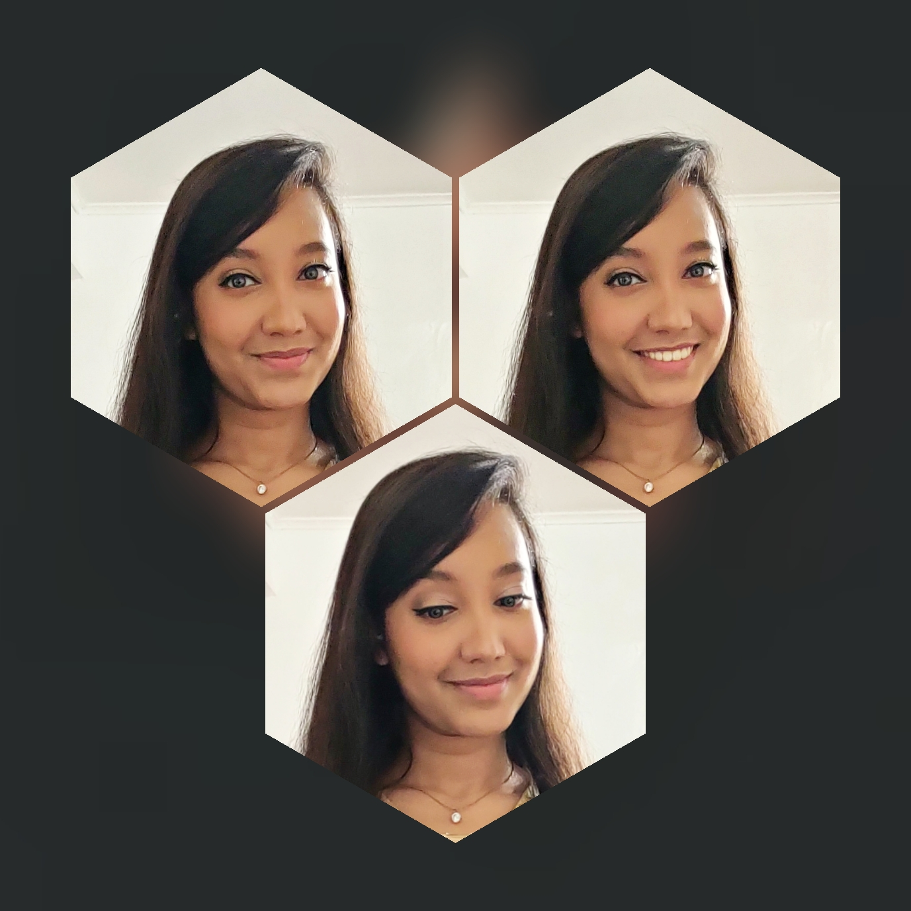

About Me !

Hello Everyone !
You are viewing Tajbiha's portfolio. I am currently enrolled in Baruch College in CIS major. This is my work during QCC Software Eng. Micro Credential Web Development BootCamp. In these 6 weeks I've learn a lot about HTML, CSS & JavaScript, which you can view it in here. Our honorable professor Ms. Luna Ramirez was the instructor of all of my work.
Here I met some amazing hard working classmates who were always available to help and work togather. I definitely had a wonderful time with all of them.
I am leaving my social media contacts here so that you can reach me at any time. Thank You !